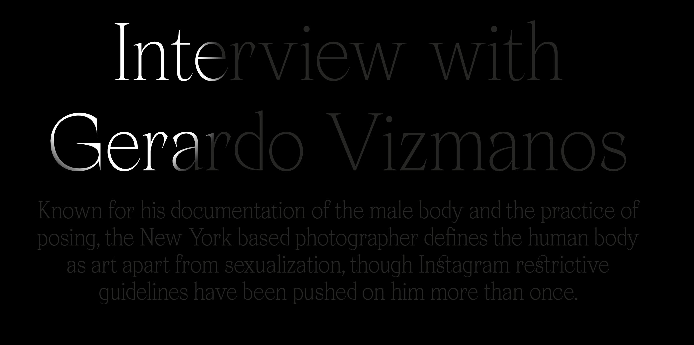
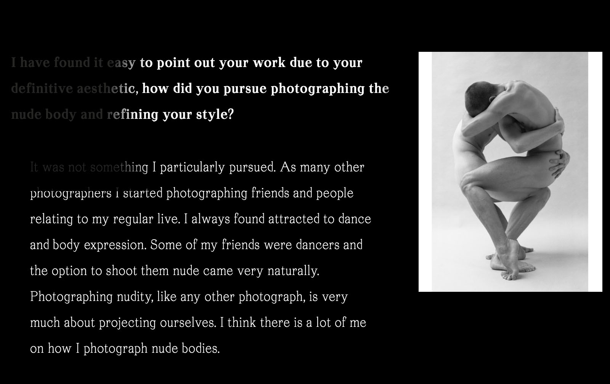
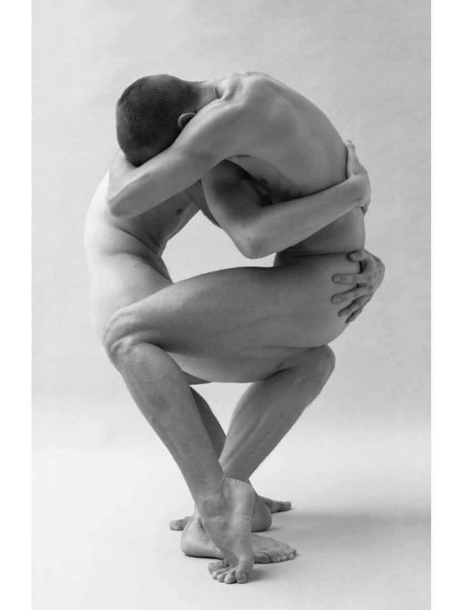

hunter uses black and white which creates an awesome bold contrast with the photographs by gerardo vizmanos.the effects used are to the point but very interactive and fun, which gives the zine it's own narrative.i especially appreciate the use of shifting color in the photographs and the spotlight effect!
the artwork is also arranged very neatly, it is easily found and focused on. 
overall i really enjoyed checking out this zine and i think hunter did a great job! i also got to learn about a photographer i previously knew nothing about so that was a bonus!! 